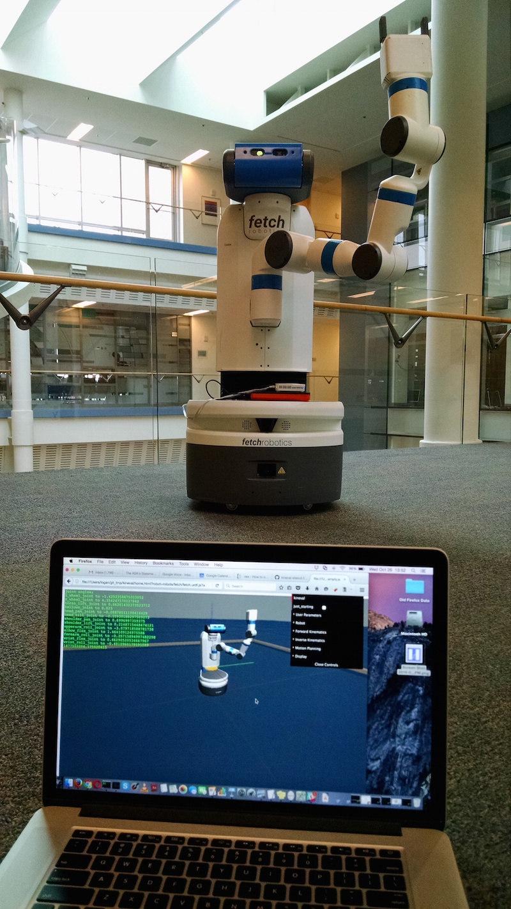
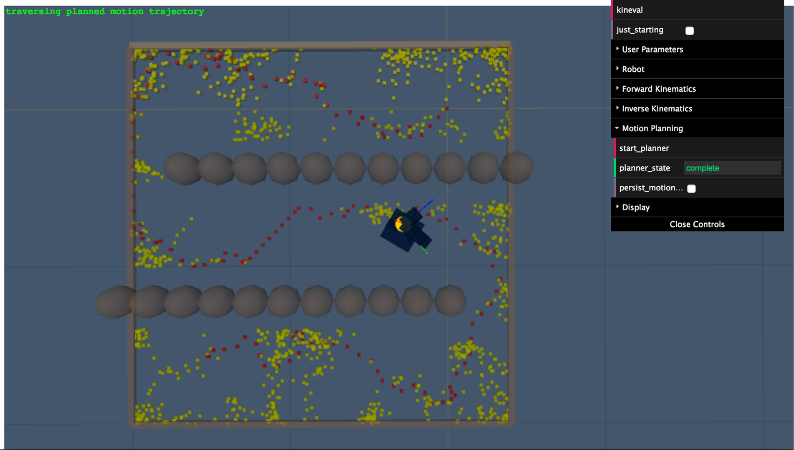
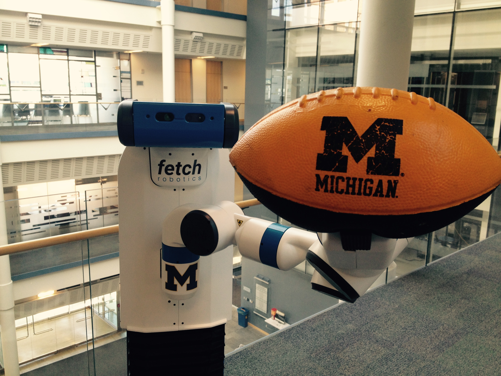

Introduction
AutoRob is an introduction to the computational foundations of autonomous robotics for programming modern mobile manipulation systems. AutoRob covers fundamental concepts in autonomous robotics for the kinematic modeling of arbitrary open-chain articulated robots and algorithmic reasoning for autonomous path and motion planning, and brief coverage of dynamics and motion control. These core concepts are contextualized through their instantiation in modern robot operating systems, such as ROS and LCM. AutoRob covers some of the fundamental concepts in computing, common to a second semester data structures course, in the context of robot reasoning, but without analysis of computational complexity. The AutoRob learning objectives are geared to ensure students completing the course are fluent programmers capable of computational thought and can develop full-stack mobile manipulation software systems.
The AutoRob course can be thought of as an exploration into the foundation for reasoning and computation by autonomous robots capable of mobility and dexterity. That is, given a robot as a machine with sensing, actuation, and computation, how do we build computational models, algorithms, software implementations that allow the robot to function autonomously, especially for pick-and-place tasks? Such computation involves functions for robots to perceive the world (as covered in Robotics 330, EECS 467, EECS 442, or EECS 542), make decisions towards achieving a given objective (this class as well as EECS 492), transforming action into motor commands (as covered in Robotics 310, Robotics 311, or EECS 367), and usably working with human users (as covered in Robotics 340). Computationally, these functions form the basis of the sense-plan-act paradigm that defines the discipline of robotics as the study of embodied intelligence, as described by Brooks. Embodied intelligence allows for understanding and extending concepts essential for modern robotics, especially mobile manipulators such as the pictured Fetch robot.
AutoRob projects ground course concepts through implementation in JavaScript/HTML5 supported by the KinEval code stencil (snapshot below from Mozilla Firefox), as well as tutorials for the ROS robot operating system and the rosbridge robot messaging protocol. These projects will coverrobot middleware architectures and publish-subscribe messaging models, graph search path planning (A* algorithm), basic physical simulation (Lagrangian dynamics, numerical integrators), proportional-integral-derivative (PID) control, forward kinematics (3D geometric matrix transforms, matrix stack composition of transforms, axis-angle rotation by quaternions), inverse kinematics (gradient descent optimization, geometric Jacobian), and motion planning (simple collision detection, sampling-based motion planning). Additional topics that could be covered include network socket programming, JSON object parsing, potential field navigation, Cyclic Coordinate Descent, Newton-Euler dynamics, task and mission planning, Bayesian filtering, and Monte Carlo localization.

KinEval code stencil and programming framework
AutoRob projects will use the KinEval code stencil that roughly follows conventions and structures from the Robot Operating System (ROS) and Robot Web Tools (RWT) software frameworks, as widely used across robotics. These conventions include the URDF kinematic modeling format, ROS topic structure, and the rosbridge protocol for JSON-based messaging. KinEval uses threejs for in-browser 3D rendering. Projects also make use of the Numeric Javascript external library (or math.js) for select matrix routines, although other math support libraries are being explored. Auxiliary code examples and stencils will often use the jsfiddle development environment.
|

You will use an actual robot (at least once)! While AutoRob projects will be mostly in simulation, KinEval allows for your code to work with any robot that supports the rosbridge protocol, which includes any robot running ROS. Given a URDF description, the code you produce for AutoRob will allow you to view and control the motion of any mobile manipulation robot with rigid links. Your code will also be able to access the sensors and other software services of the robot for your continued work as a roboticist. |
Course Staff and Office Hours
Course Instructors
Chad Jenkins
|
|
 |
Elizabeth Goeddel
|
Graduate Student Instructors | |
 |
Isaac Madhavaram
|
Haoran Zhang
|
|
Nikhil Sridhar
|
Office Hours Calendar
Winter 2025 Course Structure
This semester, the AutoRob course is offered in a synchronous in-person format across a number of sections this semester: two undergraduate in-person sections (Robotics 380 and EECS 367) and an in-person graduate section (Robotics 511).
Course Meetings:
Monday 4:30-7:20pm Eastern, Chrysler Building 133
Laboratory Sections
Friday 2:30-4:20pm Eastern, Chrysler Building 133
The AutoRob office hours queue hosted by EECS will be used to manage queueing for course office hours.
Discussion Services
Piazza
The AutoRob Course Piazza workspace will be the primary service for course-related discussion threads and announcements.
Course Schedule (tentative and subject to change)
Previously recorded slides and lecture recordings are provided for asynchronous and optional parts of the course, as well as preview versions of lectures.
Project 1: Path Planning
Due 3:00pm, Monday, January 27, 2025
Project 1 instructions can be found HERE.
Material beyond this point has not been assigned. The descriptions below are unofficial and tentative.
Assignment 2: Pendularm
Due 11:59pm, Friday, February 9, 2024
Physical simulation is widely used across robotics to test robot controllers as well as generate training data for learned controllers. Testing and training in simulation has many benefits, such as avoiding the risk of damaging a (likely expensive) robot and faster development of controllers. The video below about the NVIDIA Isaac Sim highlights many of the advantages and advancements towards narrowing the sim-to-real gap. Simulation also allows for consideration of environments not readily available for testing, such as for interplanetary exploration. We will now model and control our first robot, the Pendularm, to achieve an arbitrary desired setpoint state.
As an introduction to building your own robot simulator, your task is to implement a physical dynamics and servo controller for a simple 1 degree-of-freedom robot system. This system is 1 DOF robot arm as a frictionless simple pendulum with a rigid massless rod and idealized motor. A visualization of the Pendularm system is shown below. Students in the graduate section will extend this system into a 2-link 2-DOF robot arm, as an actuated double pendulum.

Features Overview
This assignment requires the following features to be implemented in the corresponding files in your repository:
-
Euler integrator in "project_pendularm/update_pendulum_state.js"
-
Velocity Verlet integrator in "project_pendularm/update_pendulum_state.js"
-
PID controller in "project_pendularm/update_pendulum_state.js"
-
[Grad section only] Verlet integrator in "project_pendularm/update_pendulum_state.js"
-
[Grad section only] Runge-Kutta 4 integrator in "project_pendularm/update_pendulum_state.js"
-
[Grad section only] Double pendulum implementation in "project_pendularm/update_pendulum_state2.js"
Points distributions for these features can be found in the project rubric section. More details about each of these features and the implementation process are given below.
Implementation Instructions
The code stencil for the Pendularm assignment is available within the "project_pendularm" subdirectory of KinEval.
For physical simulation, you will implement several numerical integrators for a pendulum with parameters specified in the code stencil. The numerical integrator will advance the state of the pendulum (angle and velocity) in time given the current acceleration, which your pendulum_acceleration function should compute using the pendulum equation of motion. Your code should update the angle and velocity in the pendulum object (pendulum.angle and pendulum.angle_dot) for the visualization to access. If implemented successfully, this ideal pendulum should oscillate about the vertical (where the angle is zero) and with an amplitude that preserves the initial height of the pendulum bob.
Students enrolled in the undergraduate section will implement numerical integrators for:
For motion control, students in both undergraduate sections will implement a proportional-integral-derivative controller to control the system's motor to a desired angle. This PID controller should output control forces integrated into the system's dynamics. You will need to tune the gains of the PID controller for stable and timely motion to the desired angle for a pendulum with parameters: length=2.0, mass=2.0, gravity=9.81. These default values are also provided directly in the init() function.
For user input, you should be able to:
select the choice of integrator using the [0-4] keys (with the "none" integrator as a default),
toggle the invocation of the servo controller with the 'c' or 'x' key (which is off by default),
decrement and increment the desired angle of the 1 DOF servoed robot arm using the 'q' and 'e' keys, and
(for the double pendulum) decrement and increment the desired angle of the second joint of the arm using the 'w' and 'r' keys, and
momentarily disable the servo controller with 's' key (and allowing the arm to swing uncontrolled).
Graduate Section Requirement
Students enrolled in the graduate section will implement numerical integrators for:
to simulate and control a single pendulum (in "update_pendulum_state.js"). Then, students in the graduate section will implement one of the above integrators for a double pendulum (in "update_pendulum_state2.js"). Any of the integrators may work as your choice for the double pendulum implementation, although the Runge-Kutta integrator is recommended. The double pendulum is allowed to have a smaller timestep than the single pendulum, within reasonable limits. A working visualization for the double pendularm will look similar to this result video by mamantov:
Advanced Extensions
Of the possible advanced extension points, one additional point for this assignment can be earned by generating a random desired setpoint state and using PID control to your Pendularm to this setpoint. This code must randomly generate a new desired setpoint and resume PID control once the current setpoint is achieved. A setpoint is considered achieved if the current state matches the desired state up to 0.01 radians for 2 seconds. The number of setpoints that can be achieved in 60 seconds must be maintained and reported in the user interface. The invocation of this setpoint trial must be enabled a user pressing the "t" key in the user interface.
Of the possible advanced extension points, two additional points for this assignment can be earned by implementing a simulation of a planar cart pole system. This cartpole system should have joint limits on its prismatic joint and no motor forces applied to the rotational joint. This cart pole implementation should be contained within the file "cartpole.html" under the "project_pendularm" directory.
Of the possible optional extension points, two additional points for this assignment can be earned by implementing a single pendulum simulator in maximal coordinates with a spring constraint enforced by Gauss-Seidel optimization. This maximal coordinate pendulum implementation should be contained within the file "pendularm1_maximal.html" under the "project_pendularm" directory. An additional point can be earned by extending this implementation to a cloth simulator in the file "cloth_pointmass.html".
Of the possible advanced extension points, three additional points for this assignment can be earned by developing a Newton-Euler simulation for a single rigid body with a cube geometry without consideration of contact with other objects. This maximal coordinate pendulum implementation should be contained within the file "rigid_body_sim.html" under the "project_pendularm" directory.
Of the possible advanced extension points, three additional points for this assignment can be earned by developing and implementing a maximal coordinate dynamical simulation of biped hopper with links as planar 2D rigid bodies capable of locomotion on a flat ground plane. This maximal coordinate pendulum implementation should be contained within the file "hopper_planar.html" under the "project_pendularm" directory.
Of the possible optional extension points, one additional point for this assignment can be earned by implementing a plot visualization of the state and desired setpoint for the 1 DoF pendulum over a 20 second window (of simulation time) within the pendularm1.html user interface. The Pendularm user interface must maintain at least the same usability as the provided pendularm1.html implementation.
Of the possible optional extension points, two additional points for this assignment can be earned by implementing a method for model predictive control within pendularm1.html for setpoint control.
Project Submission
For turning in your assignment, push your updated code to the master branch in your repository.
Optional: Pendularm Setpoint Competition
Details will be provided for participation in the Pendularm Setpoint Competition. Three additional points towards final grading will be awarded to the top performer in the Pendularm Setpoint Competition in each of the graduate and undergraduate sections. One additional point will be granted to the second and third place performers in each of the graduate and undergradate sections.
Assignment 3: Forward Kinematics
Due 11:59pm, Friday, Feb 23, 2024Forward kinematics (FK) forms the core of our ability to purposefully control the motion of a robot arm. FK will provide us a general formulation for controlling any robot arm to reach a desired configuration and execute a desired trajectory. Specifically, FK allows us to predict the spatial layout of the robot in our 3D world given a configuration of its joints. For the purposes of grasping and dexterous tasks, FK gives us the critical ability to predict the location of the robot's gripper (also known as its "endeffector"). As shown in our IROS 2017 video below, such manipulation assumes a robot has already perceived its environment as a scene estimate of objects and their positions and orientations. Given this scene estimate, a robot controller uses FK to evaluate and execute viable endeffector trajectories for grasping and manipulating an object.
In this assignment, you will render the forward kinematics of an arbitrary robot, given an arbitrary kinematic specification. A collection of specifications for various robots is provided in the "robots" subdirectory of the KinEval code stencil. These robots include the Rethink Robotics' Baxter and Sawyer robots, the Fetch mobile manipulator, and a variety of example test robots, as shown in the "Desired Results" section below. To render the robot properly, you will compute matrix coordinate frame transforms for each link and joint of the robot based on the parameters of its hierarchy of joint configurations. The computation of the matrix transform for each joint and link will allow KinEval's rendering support routines to properly display the full robot. We will assume the joints will remain in their zero position, saving joint motion for the next assignment.
Features Overview
This assignment requires the following features to be implemented in the corresponding files in your repository:
-
[Optional, recommended] Fill in stencils for Just Starting Mode in "kineval/kineval_startingpoint.js"
-
Core matrix routines in "kineval/kineval_matrix.js"
-
FK transforms in "kineval/kineval_forward_kinematics.js"
-
Joint selection/rendering, based on the kinematic hierarchy in "kineval/kineval_robot_init_joints.js"
-
New robot definition in your own file in the "robots" directory
Points distributions for these features can be found in the project rubric section. More details about each of these features and the implementation process are given below.
Just Starting Mode
While previous assignments were implemented within self-contained subsections of the kineval_stencil repository, with this project, you will start working with the KinEval part of the stencil repository that also supports all future projects in the course. This KinEval stencil allows for developing the core of a modeling and control computation stack (forward kinematics, inverse kinematics, and motion planning) in a modular fashion.
If you open "home.html" in this repository, you should see the disconnected pieces of a robot bouncing up and down in the default environment. This initial mode is the "starting point" state of the stencil to help build familiarity with JavaScript/HTML5 and KinEval.

Your (optional) first task is to make the bouncing robot in starting point mode responsive to keyboard commands. Specifically, the robot pieces will move upward, stop/start jittering, move closer together, and further apart (although more is encouraged). To do this, you will modify "kineval/kineval_startingpoint.js" at the sections marked with "STENCIL". These sections also include code examples meant to be a quick (and very rough) introduction to JavaScript and homogeneous transforms for translation, assuming programming competency in another language.
Brief KinEval Stencil Overview
Within the KinEval stencil, the functions my_animate() and my_init() in "home.html" are the principal access points into the animation system. my_animate() is particularly important as it will direct the invocation of functions we develop throughout the AutoRob course. my_animate() and my_init() are called by the primary process that maintains the animation loop: kineval.animate() and kineval.init() within "kineval/kineval.js".
IMPORTANT: "kineval/kineval.js", kineval.animate(), kineval.init(), and any of the given robot descriptions should not be modified.
For Just Starting Mode, my_animate() will call startingPlaceholderAnimate() and startingPlaceholderInit(), defined in "kineval/kineval_startingpoint.js". startingPlaceholderInit() contains JavaScript tutorial-by-example code that initializes variables for this project. startingPlaceholderAnimate() contains keyboard handlers and code to update the positioning of each body of the robot. By modifying the proper variables at the locations labed "STENCIL", this code will update the transformation matrix for each geometry of the robot (stored in the ".xform" attribute) as a translation in the robot's world. The ".xform" transform for each robot geometry is then used by kineval.robotDraw() to have the browser render the robot parts in the appropriate locations.
Forward Kinematics Files
Assuming proper completion of Just Starting Mode, you are now ready for implementation of robot forward kinematics. The following files are included (within script tags) in "home.html". You will modify these files for implementing FK:
"kineval/kineval_robot_init_joints.js" for initializing your robot object based on a given description object; modification of this file is required to add parent and child references to each link
"kineval/kineval_forward_kinematics.js" for implementing (a recursive) traversal over joints and links to compute transforms; traversal of forward kinematics is invoked from kineval.robotForwardKinematics() within my_animate() in home.html
"kineval/kineval_matrix.js" for the implementation of your vector and matrix routines, such as for matrix multiplication, matrix generation, etc.
Core Matrix Routines
A good place to start with your FK implemetation is writing and testing the core matrix routines. "kineval/kineval_matrix.js" contains function stencils for all required linear algebra routines. You will need to uncomment and fill in all the functions provided in this file except matrix_pesudoinverse and matrix_invert_affine. You do not need to implement the pseudoinverse calculation for this assignment; you should leave the matrix_pseudoinverse function commented out. You can implement the affine inverse function, but it will not be used in or tested for this assignment.
It is good practice to test these functions before continuing with your FK implementation. Consider writing a collection of tests using example matrix and vector calculations from the lecture slides or other sources.
Robot Examples
Each file in the "robots" subdirectory contains code to create a robot data object. This data object is initialized with the kinematic description of a robot (as well as some meta information and rendering geometries). The kinematic description defines a hierarchical configuration of the robot's links and joints. This description is a subset of the Unified Robot Description Format (URDF) converted into JSON format. The basic features of URDF are described in this tutorial.
IMPORTANT (seriously): The given robot description files should NOT be modified. Code that requires modified robot description files will fail tests used for grading. You are welcomed and encouraged to create new robot description files for additional testing.
The selection of different robot descriptions can occur directly in the URL for "home.html". As a default, the "home.html" in the KinEval stencil assumes the "mr2" robot description in "robots/robot_mr2.js". Another robot description file can be selected directly in the URL by adding a robot parameter. This parameter is segmented by a question mark and sets the robot file pointer to a given file local location, relative to "home.html". For example, a URL with "home.html?robot=robots/robot_urdf_example.js" will use the URDF example description. Note that to see the selected robot model in your visualization, you will need to turn off Just Starting Mode and have your FK methods implemented; see the Invoking Forward Kinematics section for more details.
Initialization of Kinematic Hierarchy
In addition to the various existing initialization functions, you should extend the robot object to complete the kinematic hierarchy to specify the parent and children joints for each link. This modification should be made in the kineval.initRobotJoints() function in "kineval/kineval_robot_init_joints.js". The children array of a link should be defined for all links except the leaves of the kinematic tree, in which case the ".children" property should be left undefined. For the KinEval user controls to work properly, the children array should be named the ".children" property of the link.
Note: KinEval refers to links and joints as strings, not pointers, within the robot object. robot.joints (as well as robot.links) is an array of data objects that are indexed by strings. Each of these objects stores relevant fields of information about the joint, such as its transform (".xform"), parent (".parent") and child (".child") in the kinematic hierarchy, local transform information (".origin"), etc. As such, robot.joints['JointX'] refers to an object for a joint. In contrast, robot.joints['JointX'].child refers to a string ('LinkX'), that can then be used to reference a link object (as robot.links['LinkX']). Similarly, robot.links['LinkX'].parent refers to a joint as a string 'JointX' that can then then be used to reference a joint object in the robot.joints array.
Invoking Forward Kinematics
The function kineval.robotForwardKinematics() in "kineval/kineval_forward_kinematics.js" will be the main point of invocation for your FK implementation. This function will need to call kineval.buildFKTransforms(), which is a function you will add to this file. kineval.buildFKTransforms() will update matrix transforms for the frame of each link and joint with respect to the global world coordinates. The computed transform for each frame of the robot needs to be stored in the ".xform" field of each link or joint. For a given link named 'LinkX', this xform field can be accessed as robot.links['LinkX'].xform. For a given joint named 'JointX', this xform field can be accessed as robot.joints['JointX'].xform. Once kineval.robotForwardKinematics() completes, the updated transforms for each frame are used by the function kineval.robotDraw() in the support code to render the robot.
A matrix stack recursion can be used to compute these global frames, starting from the base of the robot (specified as a string in robot.base). This recursion should use the provided local translation and rotation parameters of each joint in relation to its parent link in its traversal of the hierarchy. For a given joint 'JointX', these translation and rotation parameters are stored in the robot object as robot.joints['JointX'].origin.xyz and robot.joints['JointX'].origin.rpy, respectively. The current global translation and rotation for the base of the robot (robot.base) in the world coordinate frame is stored in robot.origin.xyz and robot.origin.rpy, respectively.
To run your FK routine, you must toggle out of starting point mode. This toggle can be done interactively within the GUI menu or by setting kineval.params.just_starting to false. The code below in "home.html" controls starting point mode invocation, where a single line can be uncommented to use FK mode by default:
// set to starting point mode is true as default
// set to false once starting forward kinematics project
//kineval.params.just_starting = false;
if (kineval.params.just_starting == true) {
startingPlaceholderAnimate();
kineval.robotDraw();
return;
}
Note: The stencil in "kineval/kineval_forward_kinematics.js" states that the user interface reuqires "robot_heading" and "robot_lateral", but these are for Assignment 4. You do not need these variables for this assignment.
Desired Results
The "robots/robot_mr2.js" example should produce the following:

If implemented properly, the "robots/robot_urdf_example.js" example should produce the following rendering:

The "robots/robot_crawler.js" example should produce the following (shown with joint axes highlighted):

Interactive Hierarchy Traversal
Additionally, a correct implementation will be able to interactively traverse the kinematic hierarchically by changing the active joint. The active joint has focus for user control, which will be used in the next assignment. For now, we are using the active joint to ensure your kinematic hierarchy is correct. You should be able to move up and down the kinematic hierarchy with the "k" and "j" keys, respectively. You can also move between the children of a link using the "h" and "l" keys.
Orienting Joint Rendering Cylinders
The cylinders used as rendering geometries for joints are not aligned with joint axes by default. The support code in KinEval will properly orient joint rendering cylinders. To use this functionality, simply ensure that the vector_cross() function is correctly implemented in "kineval/kineval_matrix.js". vector_cross() will be automatically detected and used to properly orient each joint rendering cylinder.
New Robot Description
Students also must create a new robot description file that is compatible with their KinEval forward kinematics routines.
Students will create their new robot description by working as a pair with another student.
Each pair of students will submit their new robot description by presenting it to the class during the interactive session on March 6th for our robot showcase.
In addition, students should push their description file to their assignment repository in a new file titled "robots/new_robot_description.js" before the start of the interactive session.
Include the name or uniquename of your partner in a new "robot.partner_name" property of your robot description.
Of the two possible points for this feature, one point is earned by showcasing your description to the class and the second point is earned based on your description being compatible witht the KinEval forward kinematics routines.
If external geometries are imported (similar to the Fetch and Baxter), the robot description should be in a new subdirectory with the robot's name. The robot's name should also be used to name the URDF file, such as "robots/newrobotname/newrobotname.urdf.js". It is requested that geometries for a new robot go into this directory within a "meshes" subdirectory, such as "robots/newrobotname/meshes". Guidance can be provided during office hours about creating or converting URDF-based robot description files to KinEval-compliant JavaScript and importing Collada, STL, and Wavefront OBJ geometry files.
Graduate Section Requirement
Students in the AutoRob Graduate Section must: 1) implement the assignment as described above to work with all given examples, which includes the Fetch, Baxter, and Sawyer robot descriptions, and 2) create a new robot description that works with KinEval.
The files "robots/fetch/fetch.urdf.js", "robots/baxter/baxter.urdf.js", and "robots/sawyer/sawyer.urdf.js" contain the robot data object for the Fetch, Baxter, and Sawyer kinematic descriptions. The Fetch robot JavaScript file is converted from the Fetch URDF description for ROS. A similar process was also done for the Baxter URDF description.
ROS uses a different default coordinate system than threejs, which needs to be taken into account in the FK computation for these three robots. ROS assumes that the Z, X, and Y axes correspond to the up, forward, and side directions, respectively. In contrast, threejs assumes that the Y, Z, and X axes correspond to the up, forward, and side directions. The variable robot.links_geom_imported will be set to true when geometries have been imported from ROS and set to false when geometries are defined completely within the robot description file. You will need to extend your FK implementation to compensate for the coordinate frame difference when this variable is set to true.
A proper implementation for fetch.urdf.js description should produce the following (shown with joint axes highlighted):

The "robots/sawyer/sawyer.urdf.js" example should produce the following:
Students are highly encouraged to port URDF descriptions of real world robot platforms into their code. Such examples of real world robot systems include the Kinova Movo, NASA Valkyrie and Robonaut 2, Boston Dynamics Atlas, Universal Robots UR10, and Willow Garage PR2.
The following KinEval-compatiable robot descriptions were created by students in past offerings of the AutoRob course. These descriptions are available for your use:
Boston Dynamics Atlas by yeyangf
Agility Robotics Cassie by mungam
Universal Robots UR10 by chengyah
Advanced Extensions
Of the possible advanced extension points, two additional points for this assignment can be earned by generate a proper Denavit-Hartenberg table for the kinematics of the Fetch robot. This table should be placed in the "robots/fetch" directory in the file "fetchDH.txt".
Of the possible advanced extension points, three additional points for this assignment can be earned by implementing LU decomposition (with pivoting) routines for matrix inversion and solving linear systems. These functions should be named "matrix_inverse" and "linear_solve" and placed within the file containing your matrix routines.
Of the possible advanced extension points, three additional points for this assignment can be earned by implementing rigid body transformations as dual quaternions (Kenwright 2012), in addition to the quaternion-based method described in class. Use of dual quaternion transformations must be selectable from the KinEval user interface.
Of the possible advanced extension points, three additional points for this assignment can be earned by implementing rigid body transformations as products of exponentials. Use of matrix exponential transformations must be selectable from the KinEval user interface.
Project Submission
For turning in your assignment, push your updated code to the master branch in your repository.
Assignment 4: Robot FSM Dance Contest
Due 4:00pm, Monday, March 11, 2024
Executing choreographed motion is the most common use of current robots. Robot choreography is predominantly expressed as a sequence of setpoints (or desired states) for the robot to achieve in its motion execution. This form of robot control can be found among a variety of scenarios, such as robot dancing (video below), GPS navigation of autonomous drones, and automated manufacturing. General to these robot choreography scenarios is a given setpoint controller (such as our PID controller from Pendularm) and a sequence controller (which we will now create).
For this assignment, you will build your own robot choreography system. This choreography system will enable a robot to execute a dance routine by adding motor rotation to its joints and creating a Finite State Machine (FSM) controller over pose setpoints. Your FK implementation will be extended to consider angular rotation about each joint axis using quaternions for axis-angle rotation. The positioning of each joint with respect to a given pose setpoint will be controlled by a simple P servo implementation (based on the Pendularm assignment). You will implement an FSM controller to update the current pose setpoint based on the robot's current state and predetermined sequence of setpoints. For a single robot, you will choreograph a dance for the robot by creating an FSM with your design of pose setpoints and an execution sequence.
This controller for the "mr2" example robot was a poor attempt at robot Saturday Night Fever (please do better):

This updated dance controller for the Fetch robot is a bit better, but still very far from optimal:
Features Overview
This assignment requires the following features to be implemented in the corresponding files in your repository:
-
Quaternion joint rotation in "kineval/kineval_quaternion.js" (for quaternion functions) and "kineval/kineval_forward_kinematics" (to add axis-angle joint rotation to existing kinematic traversal)
-
Interactive base control vectors in "kineval/kineval_forward_kinematics.js"
-
Pose setpoint controller in "kineval/kineval_servo_control.js"
-
Dance FSM in "kineval/kineval_servo_control.js" (FSM controller) and "home.html" (dance setpoint initialization)
-
[Grad section only] Joint limit enforcement in "kineval/kineval_controls.js"
-
[Grad section only] Prismatic joint implementation in "kineval/kineval_forward_kinematics.js"
-
[Grad section only] Fetch rosbridge interface
Points distributions for these features can be found in the project rubric section. More details about each of these features and the implementation process are given below.
Joint Axis Rotation and Interactive Joint Control
Going beyond the joint properties you worked with in Assignment 3, each joint of the robot now needs several additional properties for joint rotation and control. These joint properties for the current angle rotation (".angle"), applied control (".control"), and servo parameters (".servo") have already been created within the function kineval.initRobotJoints(). The joint's angle will be used to calculate a rotation about the joint's (normal) axis of rotation vector, specified in the ".axis" field. To complete an implementation of 3D rotation due to joint movement, you will need to first implement basic quaternion functions in "kineval/kineval_quaternion.js" then extend your FK implementation in "kineval/kineval_forward_kinematics.js" to account for the additional rotations.
If joint axis rotation is implemented correctly, you should be able to use the 'u' and 'i' keys to move the currently active joint. These keys respectively decrement and increment the ".control" field of the active joint. Through the function kineval.applyControls(), this control value effectively adds an angular displacement to the joint angle.
Interactive Base Movement Controls
The user interface also enables controlling the global position and orientation of the robot base. In addition to joint updates, the system update function kineval.applyControls() also updates the base state (in robot.origin) with respect to its controls (specified in robot.controls). With the support function kineval.handleUserInput(), the 'wasd' keys are purposed to move the robot on the ground plane, with 'q' and 'e' keys for lateral base movement. In order for these keys to behave properly, you will need to add code to update variables that store the heading and lateral directions of the robot base: robot_heading and robot_lateral. These vectors need to be computed within your FK implementation in "kineval/kineval_forward_kinematics.js" and stored as global variables. They express the directions of the robot base's z-axis and x-axis in the global frame, respectively. Each of these variables should be a homogeneous 3D vector stored as a 2D array.
If robot_heading and robot_lateral are implemented properly, the robot should now be interactively controllable in the ground plane using the keys described in the previous paragraph.
Pose Setpoint Controller
Once joint axis rotation is implemented, you will implement a proportional setpoint controller for the robot joints in function kineval.robotArmControllerSetpoint() within "kineval/kineval_servo_control.js". The desired angle for a joint 'JointX' is stored in kineval.params.setpoint_target['JointX'] as a scalar by the FSM controller or keyboard input. The setpoint controller should take this desired angle, the joint's current angle (".angle"), and servo gains (specified in the ".servo" object) to set the control (".control") for each joint. All of these joint object properties are initialized in the function kineval.initRobotJoints() in "kineval/kineval_robot_init_joints.js". Note that the "servo.d_gain" is not used in this assignment; it is for advanced extensions.
Once you have implemented the control function described above, you can enable the conroller by either holding down the 'o' key or selecting 'persist_pd' from the UI. With the controller enabled, the robot will attempt to reach the current setpoint. One setpoint is provided with the stencil code: the zero pose, where all joint angles are zero. Pressing the '0' key sets the current setpoint to the zero setpoint.
Besides the zero setpoint, up to 9 other arbitrary pose setpoints can be stored by KinEval (in kineval.setpoints) for pose control. You can edit kineval.setpoints in your code for testing and/or for the FSM controller (see below), but the current robot pose can also be interactively stored into the setpoint list by pressing "Shift+number_key" (e.g., "Shift+1" would store the current robot pose as setpoint 1). You can then select any of the stored setpoints to be the current control target by pressing one of the non-zero number keys [1-9] that corresponds to a previously-stored setpoint. At any time, the currently stored setpoints can be output to the console as JavaScript code using the JSON.stringify function for the setpoint object: "JSON.stringify(kineval.setpoints);". Once you have found the setpoints needed to implement your desired dance, this setpoint array can be included in your code as part of your dance controller.
Since you will need to implement your setpoint controller before your FSM controller, for additional testing of your setpoint controller, a "clock movement" FSM controller has been provided as the function setpointClockMovement() in "kineval/kineval_servo_control.js". This function can be invoked by holding down the 'c' key or from the UI. This controller goes well with this song.
FSM Controller
Once your pose setpoint controller is working, an FSM controller should be implemented in the function kineval.setpointDanceSequence() in "kineval/kineval_servo_control.js". The reference implementation switches between the pose setpoints in kineval.setpoints based on two additional pieces of data: an array of indices (kineval.params.dance_sequence_index) and the current pose index (kineval.params.dance_pose_index). kineval.params.dance_sequence_index will tell your FSM the order in which the setpoints in kineval.setpoints should be selected to be the control target. Note that using this convention allows you to easily select the same setpoint multiple times to produce repetition in your dance. kineval.params.dance_pose_index is used to keep track of the current index within the dance pose sequence.
If this recommended variable convention is not used, the following line in "kineval/kineval_userinput.js" will require modification:
if (kineval.params.update_pd_dance)
textbar.innerHTML += "executing dance routine, pose " + kineval.params.dance_pose_index + " of " + kineval.params.dance_sequence_index.length;
To complete your dance controller, choreograph a dance by initializing kineval.setpoints with the poses for your dance and kineval.params.dance_sequence_index with the pose ordering. You should initialize these data structures within the my_init() function in "home.html". Once you have the poses and sequence for your dance initialized, when you select both "persist_pd" and "update_pd_dance" in the UI, you should see the robot move through the setpoints of your dance.
Graduate Section Requirements
Students in the graduate section of AutoRob must implement the assignment as described above for the Fetch and Baxter robots with two additional requirements: 1) proper implementation of all joint types in the robot descriptions and 2) proper enforcement of joint limits for the robot descriptions. and 3) integration (via rosbridge) of their code with ROS or a Gazebo simulation of the Fetch.
The urdf.js files for these robots, included in the provided code stencil, contain joints with with various types that correspond to different types of motion:
continuous: rotation about the joint axis with no joint limits
revolute: rotation about the joint axis with joint limits
prismatic: translation along the joint axis with joint limits
fixed: no motion of the joint
Joints are considered to be continuous as the default. Joints with undefined motion types must be treated as continuous joints. The graduate section features for this assignment will be complete when your implementation correctly handles the direction of motion (rotation or translation) and limits of all of the above types of joints.
rosbridge allows your code can interface with any robot (or simulated robot) running rosbridge/ROS using the function kineval.rosbridge() in "kineval/kineval_rosbridge.js". This code requires that the rosbridge_server package is running in a ROS run-time environment and listening on a websocket port, such as for ws://fetch7:9090. If your FK implementation is working properly, the model of your robot in the browser will update along with the motion of the robot based on the topic subscription and callback. This functionality works seamlessly between real and simulated robots. Although this will not be done for this class, to control the robot arm, a rosbridge publisher must be written to update the ROS topic "/arm_controller/follow_joint_trajectory/goal" with a message of type "control_msgs/FollowJointTrajectoryActionGoal".
Machines running rosbridge, ROS, and Gazebo for the Fetch will be available during special sessions of the class. Students are encouraged to install and run the Fetch simulator on their own machines based on this tutorial.
Robot FSM Dance Showcase
Students in the graduate section are required to present in the Robot Dance FSM Showcase in class on March 11. Students in the undergraduate section can earn one additional extension point by presenting in this showcase. Information for showcase presentations will be communicated through the class discussion channels.
Advanced Extensions
Of the possible advanced extension points, one additional point for this assignment can be earned by adding the capability of displaying laser scans from a real or simulated Fetch robot.
Of the possible advanced extension points, four additional points for this assignment can be earned by adding the capability of displaying 3D point clouds from a real or simulated Fetch robot and computing surface normals about each point.
Of the possible advanced extension points, four additional points for this assignment can be earned by implementing dynamical simulation through the recursive Newton-Euler algorithm (Spong Ch.7). This dynamical simulation update be implemented as function kineval.updateDynamicsNewtonEuler() in the file "kineval/kineval_controls.js". In "home.html", the call to kineval.updateDynamicsNewtonEuler() should replace the call purely kinematic update in kineval.applyControls().
Of the possible advanced extension points, five additional points for this assignment can be earned by developing and implementing a maximal coordinate dynamical simulation of biped hopper with links as 3D rigid bodies, similar to those in "On The Run" by Raibert and Hodgins at the MIT Leg Lab. This maximal coordinate pendulum implementation should be contained within the subdirectory "hopper_3d" with an "index.html" file that can be open to execute the simulation.
Project Submission
For turning in your assignment, push your updated code to the master branch in your repository.
Assignment 5: Inverse Kinematics
Due 11:59pm, Monday, March 25, 2024
Although effective, robot choreography in configuration space is super tedious and inefficient. This difficulty is primarily due to posing each joint of the robot at each setpoint. Further, changing one joint often requires updating several other joints due to the nature of kinematic dependencies. Inverse kinematics (IK) offers a much easier and efficient alternative. With IK implemented, we only need to pose the endeffector in a common workspace, and the states of the joints in configuration space are automatically inferred. IK is also important when we care about the "tool tip" of an instrument being used by a robot. One such example is a robot using marker to draw a picture, such as in the PR2 Portrait Bot Project below:
For this assignment, you will now control your robot to reach to a given point in space through inverse kinematics for position control of the robot endeffector. Inverse kinematics will be implemented through gradient descent optimization with both the Jacobian Transpose and Jacobian Pseudoinverse methods, although only one will be invoked at run-time.
As shown in the video below, if successful, your robot will be able to continually place its endeffector (indicated by the blue cube) exactly on the reachable target location (indicated by the green cube), regardless of the robot's specific configuration:
Features Overview
This assignment requires the following features to be implemented in the corresponding files in your repository:
-
Manipulator Jacobian in "kineval/kineval_inverse_kinematics.js"
-
Gradient descent with Jacobian transpose in "kineval/kineval_inverse_kinematics.js"
-
Jacobian pseudoinverse in "kineval/kineval_matrix.js" (pseudoinverse function) and "kineval/kineval_inverse_kinematics.js" (use in gradient descent)
Points distributions for these features can be found in the project rubric section. More details about each of these features and the implementation process are given below.
Matrix Pseudoinverse Function
You will need to implement one additional matrix helper function in "kineval/kineval_matrix.js" for this assignment: matrix_pseudoinverse. This method will be necessary for the pseudoinverse version of gradient descent (see below). For this helper function, you are allowed to use a library function for matrix inversion, which can be invoked by using the provided routine numeric.inv(mat), available through numericjs.
Core IK Function
The core of this assignment is to complete the kineval.iterateIK() function in the file kineval/kineval_inverse_kinematics.js. This function is invoked within the function kineval.inverseKinematics() with three arguments:
endeffector_target_world: an object expressing the endeffector target in the world frame; it has two fields, endeffector_target_world.position, the target endeffector position (as a 3D homogeneous vector), and endeffector_target_world.orientation, the target endeffector orientation (as Euler angles)
endeffector_joint: the name of the joint directly connected to the endeffector
endeffector_position_local: the location of the endeffector in the local joint frame
From these arguments and the current robot configuration, the kineval.iterateIK() function will compute controls for each joint. Upon update of the joints, these controls will move the configuration and endeffector of the robot closer to the target.
Important: Students in an undergraduate section are expected to implement inverse kinematics for only the position, not the orientation, of the endeffector.
kineval.iterateIK() should also respect global parameters for using the Jacobian pseudoinverse (through boolean parameter kineval.params.ik_pseudoinverse) and step length of the IK iteration (through real-valued parameter kineval.params.ik_steplength). Note that these parameters can be changed through the user interface (under Inverse Kinematics). KinEval also maintains the current endeffector target information in the kineval.params.ik_target parameter.
IK iterations can be invoked through the user interface (Inverse Kinematics->persist_ik) or by holding down the 'p' key. Further, the 'r'/'f' keys will move the target location up/down. You can also move the robot relative to the target using the robot base controls. When performing IK iterations, the endeffector and its target pose will be rendered as cube geometries in blue and green, respectively.
For your code to work with the CI grader, you will need to set three global variables in kineval.iterateIK(): robot.dx, robot.jacobian, and robot.dq. There is a comment in "kineval/kineval_inverse_kinematics.js" that specifies what each of these variables should hold. Please note that robot.dx and robot.jacobian should both have six rows, even if you are doing position-only IK.
In implementing this IK routine, please also remember the following:
Computation of the Jacobian need only to occur with respect to the joints along the chain from the endeffector joint to the robot base
The location of the endeffector needs to be computed using transforms resulting from the robot's forward kinematics
The computed velocity in configuration space should be applied to the robot through the .control field of each joint
IK Random Trial
All students in the AutoRob course are expected to run their IK controller with the random trial feature in the KinEval stencil. The IK random trial is executed through the function kineval.randomizeIKtrial() in the file "kineval/kineval_inverse_kinematics.js". This function is incomplete in the provided stencil. Code for this function to properly run the random trial will be made available in the assignment 5 discussion channel. Once you have copied the necessary code into this function, you will be able to test your code on random trials by first selecting persist_ik (under Inverse Kinematics) then selecting execute (under Inverse Kinematics->IK Random Trial) from the user interface.
Graduate Section Requirement
Students enrolled in the graduate section of AutoRob will implement inverse kinematics for both the position and orientation of the endeffector, namely for the Fetch robot. The default IK behavior will be position-only endeffector control. Both endeffector position and orientation should be controlled when the boolean parameter kineval.params.ik_orientation_included is set to true, which can be done through the user interface (Inverse Kinematics->ik_orientation_included).
In order to handle the orientation of the endeffector in your IK implementation, you will need to calculate the orientation part of the error term, which will require you to implement a conversion from a rotation matrix to Euler angles. You may find an online reference to inform your implementation of this conversion (please cite it in a comment in your code) or develop your own approach to the conversion calculation. Completing this conversion is a necessary step for including orientation in your IK implementation, and it also fulfills the "Euler angle conversion" feature.
Advanced Extensions
Of the possible advanced extension points, one extension point for this assignment can be earned by reaching to 100 targets in a random trial within 60 seconds. A video of this execution must be provided to demonstrate this achievement. This video file should be in the repository root directory with the name "IK100in60" and appropriate file extension.
Of the possible advanced extension points, three extension points for this assignment can be earned by implementing the Cyclic Coordinate Descent (CCD) inverse kinematics algorithm by Wang and Chen (1991). This function should be implemented in the file "kineval/kineval_inverse_kinematics.js" as another option within the function kineval.iterateIK().
Of the possible advanced extension points, three extension points for this assignment can be earned by implementing downhill simplex optimization to perform inverse kinematics. This function should be implemented in the file "kineval/kineval_inverse_kinematics.js" as another option within the function kineval.iterateIK().
Of the possible advanced extension points, one extension point for this assignment can be earned by implementing stochastic gradient descent to perform inverse kinematics. This function should be implemented in the file "kineval/kineval_inverse_kinematics.js" as another option within the function kineval.iterateIK().
Of the possible advanced extension points, four extension points for this assignment can be earned by implementing resolved-rate inverse kinematics with null space constraints to respect joint limits. This function should be implemented in the file "kineval/kineval_inverse_kinematics.js" as another option within the function kineval.iterateIK().
Of the possible advanced extension points, one extension point can be earned by implementing a closed-form inverse kinematics solution for the RexArm 4-DOF robot arm, which can be used later projects in EECS 467 (Autonomous Robotics Laboratory).
Of the possible advanced extension points, four extension points for this assignment can be earned by extending your IK controller to use potential fields to avoid collisions.
Of the possible advanced extension points, one extension point for this assignment can be earned by implementing a search mechanism to automatically find appropriate PID gains for the Pendularm. This implementation should be placed in the file "project_pendularm/pendularm1_gainsearch.html" and allow for arbitrary initial PID gains for the search to be set in the variable "initial_gains".
Project Submission
For turning in your assignment, ensure your completed project code has been committed and pushed to the master branch of your repository.
Assignment 6: Motion Planning
Due 11:59pm, Monday, April 15, 2024
Our last programming project for AutoRob returns to search algorithms for generating navigation setpoints, but now for a high-dimensional robot arm. The A-star graph search algorithm in Assignment 1 is a good fit for path planning when the space to explore is limited to the two degrees-of-freedom of a robot base. However, as the number of degrees-of-freedom of our robot increases, our search complexity will grow exponentially towards intractability. For such high-dimensional search problems, an exhaustive overview of the majority of the space is not an option. Instead, we now look to sampling-based search algorithms, which will introduce randomness to our search process. These sampling-based algorithms trade off the guarantees and optimality of exhaustive graph search for viably tractable planning in complex environments. The example below shows one example of sampling-based planning navigating to move a rod through a narrow passageway:
and such planning is also used in simple tabletop scenarios:
For this assignment, you will now implement a collision-free motion planner to enable your robot to navigate from a random configuration in the world to its home configuration (or "zero configuration"). This home configuration is where every robot DOF has a zero value. For your planning implementation, the configuration space includes the state of each joint and the global orientation and position of the robot base. Thus, the robot must move to its original state at the origin of the world. A visual explanation of this desired behavior is below:

For both the undergraduate and graduate sections, motion planning will be implemented through the RRT-Connect algorithm (described by Kuffner and LaValle). The graduate section will additionally implement the RRT-Star (alternate paper link via IEEE) motion planner of Karaman et al. (ICRA 2011).
Features Overview
This assignment requires the following features to be implemented in the corresponding files in your repository:
-
Collision detection in "kineval/kineval_collision.js"
-
2D RRT-Connect in "project_pathplan/rrt.js"
-
Configuration space RRT-Connect in "kineval/kineval_rrt_connect.js"
Points distributions for these features can be found in the project rubric section. More details about each of these features and the implementation process are given below.
2D RRT-Connect
To gain familiarity with the RRT-Connect algorithm, you can start this assignment by returning to the 2D world from Assignment 1. If needed, refer back to the Assignment 1 description for a description of the search canvas environment and its parameters. You can enable RRT-Connect as the search algorithm through the URL parameter search_alg: "search_canvas.html?search_alg=RRT-connect".
You will implement the 2D version of RRT-Connect in project_pathplan/rrt.js by completing the iterateRRTConnect() function. Its signature and desired return values are provided in the code stencil. Note that there are other function stencils provided in this file as well, but your 2D RRT-Connect implementation should involve only iterateRRTConnect() and any helper functions you choose to add. You do not need to implement iterateRRT(), and only students in the graduate section need to implement iterateRRTStar() (see description of graduate section requirements below).
A few other details to be aware of when implementing 2D RRT-Connect:
-
The two search tree global variables needed for RRT-Connect, T_a and T_b, are initialized for you in project_pathplan/infrastructure.js
-
You can use provided support functions from project_pathplan/infrastructure.js, including two new RRT-specific helpers: insertTreeVertex() and insertTreeEdge()
-
You may also create additional helper functions in project_pathplan/rrt.js to handle different steps of the RRT-Connect algorithm; some suggestions are provided in the code stencil
-
iterateRRTConnect() is called for you from the animation code, and it should perform just one iteration of the RRT-Connect algorithm each time it is called
-
You should use drawHighlightedPath(), not drawHighlightedPathGraph(), to visualize the final path found by RRT-Connect; see the implementation in draw.js for information about how this function works
If properly implemented, your RRT-Connect implementation should produce results similar to the image below, although the inherent randomness of the algorithm will mean that the sampled states and final path will be slightly different:
Getting Started in Configuration Space
The core of this assignment is to complete the robot_rrt_planner_init() and robot_rrt_planner_iterate() in kineval/kineval_rrt_connect.js. This file and the collision detection file kineval/kineval_collision.js have already been included in home.html for you:
<script src="kineval/kineval_rrt_connect.js"></script>
<script src="kineval/kineval_collision.js"></script>
The code stencil will automatically load a default world. A different world can be specified as an appended parameter within the URL: "home.html?world=worlds/world_name.js". The world file specifies the global objects "robot_boundary", which describes the min and max values of the world along the X, Y, and Z axes, and "robot_obstacles", which contains the locations and radii of sphere obstacles. To ensure the world is rendered in the display and available for collision detection, the geometries of the world are included through the provided call to kineval.initWorldPlanningScene() in kineval/kineval.js.
Collision Detection Setup
In the search canvas world, a collision detection function was provided for you. For RRT-Connect in robot configuration space, you will need to start by completing the collision detection feature yourself. The main collision detection function used by configuration-space RRT-Connect is kineval.robotIsCollision() (in kineval/kineval_collision.js), which detects robot-world collisions with respect to a specified world geometry.
Worlds are specified as a rectangular boundary and sphere obstacles. A collection of worlds are provided in the "worlds/" subdirectory of kineval_stencil. The collision detection system performs two forms of tests: 1) testing of the base position of the robot against the rectangular extents of the world, which is provided by default, and 2) testing of link geometries for a robot configuration against spherical objects, which depends on code you will write.
Collision testing for links in a configuration should be performed by AABB/Sphere tests that require the bounding box of each link's geometry in the coordinates of that link. This bounding box is computed for you by the following code within the loop inside kineval.initRobotLinksGeoms() in kineval.js:
// For collision detection,
// set the bounding box of robot link in local link coordinates
robot.links[x].bbox = new THREE.Box3;
// setFromObject returns world space bbox
robot.links[x].bbox = robot.links[x].bbox.setFromObject(robot.links[x].geom);
As you write the collision test, you can thus access the AABB for any robot link as robot.links[x].bbox. This object contains two elements, max and min, that contain the maximum and minimum corners of the link's bounding box, specified in the link's local coordinate frame.
Even before your planner is implemented, you can use the collision system interactively with your robot. The provided kineval.robotIsCollision() function is called for you during each iteration from my_animate() in home.html:
// determine if robot is currently in collision with world
kineval.robotIsCollision();
Completing Collision Detection
To complete the collision system, you will need to modify the forward kinematics calls in kineval/kineval_collision.js. Specifically, you will need to perform a traversal of the forward kinematics of the robot for an arbitrary robot configuration within the function kineval.poseIsCollision(). kineval.poseIsCollision() takes in a vector in the robot's configuration space and returns either a boolean false for no detected collision or a string with the name of a link that is in collision. As a default, this function performs base collision detection against the extents of the world. For collision detection of each link, this function will make a call to function that you create called robot_collision_forward_kinematics() to recursively test for collisions along each link. Your collision FK recursion should use the link collision function, traverse_collision_forward_kinematics_link(), which is provided in kineval/kineval_collision.js, along with a joint traversal function that properly positions the link and joint frames for the given configuration.
Some pointers about your collision FK traversal:
-
Remember that you need the inverse of the matrix stack for collision testing in a link frame (instead of in the world frame)
-
You can feel free to implement matrix_invert_affine() instead of using numeric.inv(). Affine transforms can be inverted (in constant time, Quiz 3!) through a much simpler process than the generic matrix inversion, which is O(n^3) for Gaussian elimination.
If successful to this point, you should be able to move the robot around the world and see the colliding link display a red wireframe when a collision occurs. There could be many links in collision, but only one will be highlighted, as shown in the following examples:
Implementing and Invoking the Planner
Your motion planner will be implemented in the file kineval/kineval_rrt_connect.js through the functions kineval.robotRRTPlannerInit() and robot_rrt_planner_iterate(). This implementation can be a port of your 2D RRT-Connect, but it will require some updates to work with in the configuration space of KinEval robots. The kineval.robotRRTPlannerInit() function should be modified to initialize the RRT trees and other necessary variables. The robot_rrt_planner_iterate() function should be modified to perform a single RRT-Connect iteration based on the current RRT trees.
Basic RRT tree support functions are provided for initialization, adding configuration vertices (which renders "breadcrumb" indicators of base positions explored), and adding graph edges between configuration vertices. This function should not use a for loop to perform multiple planning iterations, as this will cause the browser to block and become unresponsive. Instead, the planner will be continually called asynchronously by the code stencil until a motion plan solution is found.
Important: Your planner should be constrained such that the search does not consider configurations where the base is outside the X-Z plane. Specifically, the base should not translate along the Y axis, and should not rotate about the X and Z axes.
Once implemented, your planner will be invoked interactively by first moving the robot to an arbitrary non-colliding configuration in the world and then pressing the "m" key. The "m" key will request the generation of a motion plan. The goal of a motion plan will always be the home configuration, as defined in the introduction to this assignment. While the planner is working, it will not accept new planning requests. Thus, you can move the robot around while the planner is executing.
Planner Output
The output of your planner will be a motion path in a sequentially ordered array (named kineval.motion_plan[]) of RRT vertices. Each element of this array contains a reference to an RRT vertex with a robot configuration (.vertex), an array of edges (.edges), and a threejs indicator geometry (.geom). Once a viable motion plan is found, this path can be highlighted by changing the color of the RRT vertex "breadcrumb" geom indicators. The color of any configuration breadcrumb indicator in a tree can be modified, such as in the following example for red:
tree.vertices[i].geom.material.color = {r:1,g:0,b:0};
The user should should be able to interactively move the robot through the found plan. Stencil code in user_input() within kineval_userinput.js will enable the "n" and "b" keys to move the robot to the next and previous configuration in the found path, respectively. These user key presses will respectively increment and decrement the parameter kineval.motion_plan_traversal_index such that the robot's current configuration will become:
kineval.motion_plan[kineval.motion_plan_traversal_index]
Note: we are NOT using robot.joints[...].control to execute the found path of the robot. Although this can be done, the collision system does not currently test for configurations that occur due to the motion between configurations.
The result of your RRT-Connect implementation in configuration space should look similar to this path found in the worlds/world_s.js world:
Testing
Make sure to test all provided robot descriptions from a reasonable set of initial configurations within all of the provided worlds, ensuring that:
-
a valid non-colliding path is found and can be traversed,
-
the robot does not to take steps longer than 1 unit,
-
the robot base does not move outside the X-Z plane. Specifically, the base should not translate along the Y axis, and should not rotate about the X and Z axes.
Warning: Respect Configuration Space
The planner should produce a collision-free path in configuration space (over all robot DOFs) and not just the movement of the base on the ground plane. If your planner does not work in configuration space, it is sure to fail tests used for grading.
Graduate Section Requirement
In addition to the requirements above, students in the graduate section must also implement the RRT-Star motion planning algorithm for the 2D search canvas. You will need to complete the iterateRRTStar() function stencil in project_pathplan/rrt.js for this feature. Part of this assignment is an exercise in how to conceptualize implementation details of an algorithm from a robotics paper. Because of this, you will need to refer to the linked paper for details on how to implement the RRT-Star algorithm. Note: The course staff will not provide assistance with RRT-Star, so we strongly encourage high-level discussion of the algorithm among students on the assignment channel and amongst peers.
Advanced Extensions
Of the possible advanced extension points, one additional point for this assignment can be earned by adding the capability of motion planning to an arbitrary robot configuration goal.
Of the possible advanced extension points, two additional points for this assignment can be earned by using the A-star algorithm for base path planning in combination with RRT-Connect for arm motion planning.
Of the possible advanced extension points, one additional point for this assignment can be earned by writing a collision detection system for two arbitrary triangles in 2D using a JavaScript/HTML5 canvas element.
Of the possible advanced extension points, two additional points for this assignment can be earned by writing a collision detection system for two arbitrary triangles in 3D using JavaScript/HTML5 and threejs or a canvas element.
Of the possible advanced extension points, four additional points for this assignment can be earned by implementation of triangle-triangle tests for collision detection between robot and planning scene meshes.
Of the possible advanced extension points, three additional points for this assignment can be earned by implementation of cubic or quintic polynomial interpolation (Spong Ch. 5.5.1 and 5.5.2) across configurations returned in a computed motion plan.
Of the possible advanced extension points, four additional points for this assignment can be earned by implementing an approved research paper describing a motion planning algorithm.
Project Submission
For turning in your assignment, ensure your completed project code has been committed and pushed to the master branch of your repository.
Assignment 7: The best use of robotics?
Slides due 11:59pm, Friday, April 19, 2024
Presentation due 4:30pm, Monday, April 22, 2024
Scenario: An investor is considering giving you 20 million dollars (cold hard USD cash, figuratively). This investor has been impressed by your work with KinEval and other accomplishments while at the University of Michigan. They are convinced you have the technical ability to make a compelling robot technology... but, they are unsure how this technology could produce something useful. Your task is to make a convincing pitch for a robotics project that would yield a high return on investment, as measured by some metric (financial profit, good for society, creation of new knowledge, etc.).
You will get 60 seconds to make a pitch to develop something useful with robots. Consider the instructor and your classmates as the people that need to be convinced. As a guideline, your pitch should address an opportunity (presented by a need or a problem), your planned result (as a system, technology, product, and/or service), and how you will measure successful return on investment. Return on investment can be viewed as financial profit (wrt. venture capital), good for society (wrt. a government program), creation of new knowledge or capabilities (wrt. a grant for scientific research). Remember, the purpose is to convince and inspire about what is possible, rather than dive into specifics.
The last scheduled class period (April 22, 4:30-7:30pm) will be dedicated to student presentations during which each student will have 60 seconds to make their pitch to the rest of class.
Please insert your finalized presentation slides in the Best Use of Robotics Google Slides presentation before 11:59pm on Friday April 19th. A link to this Google Slides presentation will be provided via the course Slack workspace and Piazza discussion board. Your first slide must include the title of your presentation, your name, and your U-M Michigan unique name.
The pitch judged to be the most convincing will get first dibs.
Good luck and happy hacking!
